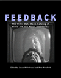
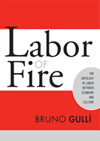
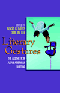

|
The
African American Jeremiad
Appeals for Justice in America
Howard-Pitney, David
An enduring verbal tradition links African American leaders from
Frederick Douglass to Malcolm X to Alan Keyes
Revised and Expanded Edition
288 pp • 5.5x8.25 • Fall 2005
paper 1-59213-415-7
EAN 978-1-59213-415-1
cloth 1-59213-328-2
EAN 978-1-59213-328-4
|
|
Animal
Passions and Beastly Virtues
Reflections on Redecorating Nature
Bekoff, Marc, foreword by Jane Goodall
An engaging, thoughtful look at the science and ethics of research
into animal behavior
320 pp • 6x9 • Fall 2005
paper 1-59213-348-7
EAN 978-1-59213-348-2
cloth 1-59213-347-9
EAN 978-1-59213-347-5
|
|
Art
in Cinema
Documents Toward a History of the Film Society
MacDonald, Scott
Fascinating documentation of one of the most important film societies
in American history
320 pp • 7x10 • Fall 2005
cloth 1-59213-425-4
EAN 978-1-59213-425-0
|
|
Chinese
American Transnationalism
The Flow of People, Resources, and Ideas between China and America
during the Exclusion Era
edited by Chan, Sucheng
The third volume in a trilogy that offers the most comprehensive
account to date of the Chinese American experience during the exclusion
era
312 pp • 6x9 • Fall 2005
paper 1-59213-435-1
EAN 978-1-59213-435-9
cloth 1-59213-434-3
EAN 978-1-59213-434-2
|
|
Courts,
Liberalism, and Rights
Gay Law and Politics in the United States and Canada
Pierceson, Jason
Understanding approaches to liberalism through the study of the
politics of gay and lesbian rights
264 pp • 6x9 • Fall 2005
paper 1-59213-401-7
EAN 978-1-59213-401-4
cloth 1-59213-400-9
EAN 978-1-59213-400-7
|
|
The
Disenfranchisement of Ex-Felons
Hull, Elizabeth A.
A thought-provoking look at one population's loss of voting rights
in the United States
232 pp • 5.5x8.25 • Fall 2005
paper 1-59213-185-9
EAN 978-1-59213-185-3
cloth 1-59213-184-0
EAN 978-1-59213-184-6
|
|
Disorders
of Desire
Sexuality and Gender in Modern American Sexology
Irvine, Janice M.
How our notions about sexual behavior and sexuality have been influenced
by sexology, from its roots in nineteenth century Europe to Kinsey's
research to the current Viagra Revolution
Revised and Expanded Edition
320 pp • 6x9 • Fall 2005
paper 1-59213-151-4
EAN 978-1-59213-151-8
|

|
The
Eagles Encyclopedia
Didinger, Ray and Robert S. Lyons
The first comprehensive history of the Philadelphia Eagles
336 pp • 8.5x11 • Fall 2005
cloth 1-59213-449-1
EAN 978-1-59213-449-6
|

|
Feedback
The Video Data Bank Catalog of Video Art and Artist Interviews
edited by Horsfield, Kate and Lucas Hilderbrand
Historic documentation of the development of art-based, activist,
and alternative media in the U.S.
360 pp • 8.5x11 • Fall 2005
cloth 1-59213-182-4
EAN 978-1-59213-182-2
|
|
From
Black Power to Hip Hop
Racism, Nationalism, and Feminism
Collins, Patricia Hill
A provocative analysis of the new contours of black nationalism
and feminism in America
256 pp • 6x9 • Fall 2005
paper 1-59213-092-5
EAN 978-1-59213-092-4
cloth 1-59213-091-7
EAN 978-1-59213-091-7
|
|
From
Tian'anmen to Times Square
Transnational China and the Chinese Diaspora on Global Screens,
1989-1997
Marchetti, Gina
How media depictions of Chinese culture have changed, from the
Tian'anmen Square uprising to the British return of Hong Kong to
China
320 pp • 6x9 • Fall 2005
paper 1-59213-278-2
EAN 978-1-59213-278-2
cloth 1-59213-277-4
EAN 978-1-59213-277-5
|
|
Global
Energy Shifts
Fostering Sustainability in a Turbulent Age
Podobnik, Bruce
A timely look at key transitions in energy use over the past 100
years
240 pp • 6x9 • Fall 2005
paper 1-59213-294-4
EAN 978-1-59213-294-2
cloth 1-59213-293-6
EAN 978-1-59213-293-5
|
|
The
Holocaust and Memory in the Global Age
Levy, Daniel and Natan Sznaider, translated by Assenka Oksiloff
How collective memory of the Holocaust advances human rights in
the Global Age
240 pp • 5.5x8.25 • Fall 2005
paper 1-59213-276-6
EAN 978-1-59213-276-8
cloth 1-59213-275-8
EAN 978-1-59213-275-1
|

|
Labor
of Fire
The Ontology of Labor between Economy and Culture
Gull�, Bruno
Can work exist outside of capitalism?
232 pp • 6x9 • Fall 2005
paper 1-59213-113-1
EAN 978-1-59213-113-6
cloth 1-59213-112-3
EAN 978-1-59213-112-9
|

|
Literary
Gestures
The Aesthetic in Asian American Writing
edited by Davis, Roc�o G. and Sue-Im Lee
Form as function in Asian American literature
248 pp • 6x9 • Fall 2005
paper 1-59213-365-7
EAN 978-1-59213-365-9
cloth 1-59213-364-9
EAN 978-1-59213-364-2
|

|
Medicalized
Masculinities
edited by Rosenfeld, Dana and Christopher A. Faircloth
The first book to examine the male body in relation to the sociology
of health and gender
272 pp • 6x9 • Fall 2005
paper 1-59213-098-4
EAN 978-1-59213-098-6
cloth 1-59213-097-6
EAN 978-1-59213-097-9
|

|
Of
Others Inside
Insanity, Addiction, and Belonging in America
Weinberg, Darin, foreword by Bryan S. Turner
An original, comparative look at homelessness, mental disease,
and addiction in America
248 pp • 6x9 • Fall 2005
paper 1-59213-404-1
EAN 978-1-59213-404-5
cloth 1-59213-403-3
EAN 978-1-59213-403-8
|

|
Ordinary
Poverty
A Little Food and Cold Storage
DiFazio, William
A biting chronicle of the life of the working poor in the wake
of welfare reform
232 pp • 6x9 • Fall 2005
paper 1-59213-458-0
EAN 978-1-59213-458-8
cloth 1-59213-014-3
EAN 978-1-59213-014-6
|
|
Positively
No Filipinos Allowed
Building Communities and Discourse
edited by Tiongson, Jr., Antonio T., Edgardo V. Gutierrez and Ricardo
V. Gutierrez, foreword by Lisa Lowe
Essays challenging conventional narratives of Filipino American
history and culture
272 pp • 6x9 • Fall 2005
paper 1-59213-122-0
EAN 978-1-59213-122-8
cloth 1-59213-121-2
EAN 978-1-59213-121-1
|
|
A
Right to Housing
Foundation for a New Social Agenda
edited by Bratt, Rachel G., Michael E. Stone and Chester Hartman
An examination of America's housing crisis by the leading progressive
housing activists in the country
448 pp • 7x10 • Fall 2005
paper 1-59213-432-7
EAN 978-1-59213-432-8
cloth 1-59213-431-9
EAN 978-1-59213-431-1
|
|
Transnational
Asian American Literature
Sites and Transits
edited by Lim, Shirley Geok-lin, John Blair Gamber, Stephen Hong Sohn
and Gina Valentino
Exploring the transnational dynamics of Asian American literature
320 pp • 6x9 • Fall 2005
paper 1-59213-451-3
EAN 978-1-59213-451-9
cloth 1-59213-450-5
EAN 978-1-59213-450-2
|

|
Veterans
Stadium
Field of Memories
Westcott, Rich, foreword by Darren Daulton
A loving tribute to the home of some of Philadelphia's greatest
sporting and cultural events
232 pp • 7x10 • Fall 2005
cloth 1-59213-428-9
EAN 978-1-59213-428-1
|
|
Welfare
Discipline
Discourse, Governance, and Globalization
Schram, Sanford
Rethinking the American understanding of poverty, welfare, and
the language used to describe them
208 pp • 6x9 • Fall 2005
paper 1-59213-302-9
EAN 978-1-59213-302-4
cloth 1-59213-301-0
EAN 978-1-59213-301-7
|

|
The
World Next Door
South Asian American Literature and the Idea of America
Srikanth, Rajini
Literature that takes us beyond identity to empathy
New in Paperback!
304 pp • 6x9 • Fall 2004
paper 1-59213-081-X
EAN 978-1-59213-081-8
|
Click here
to download the catalog (pdf). |